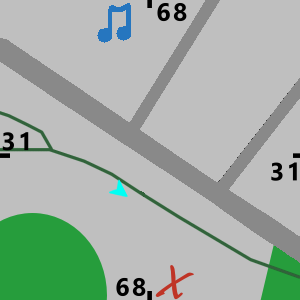

ALT TECH
Inicio
Info
Formulario
Bienvenido a la pagina del evento
Estamos construyendo la pagina
¿Que habra en este mapa?

¿Quieres asistir al evento?
Inscribite al evento con el siguiente link
Confirmar asistencia